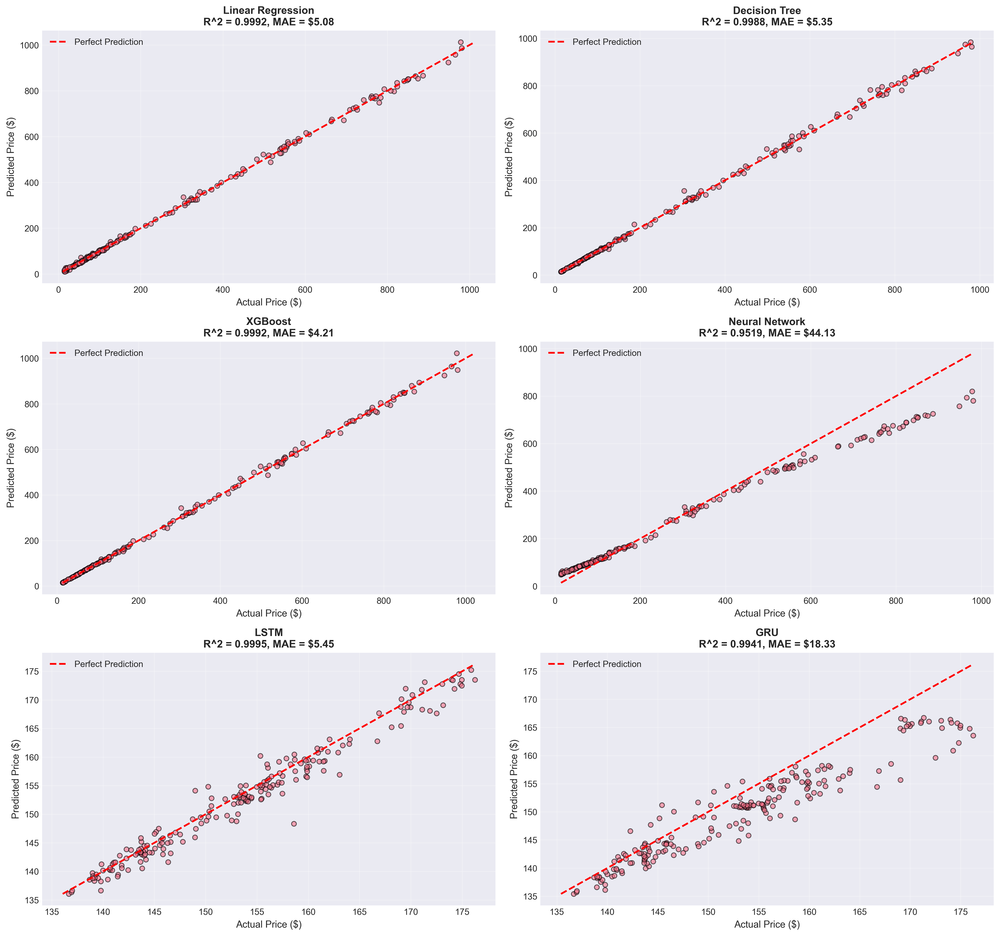
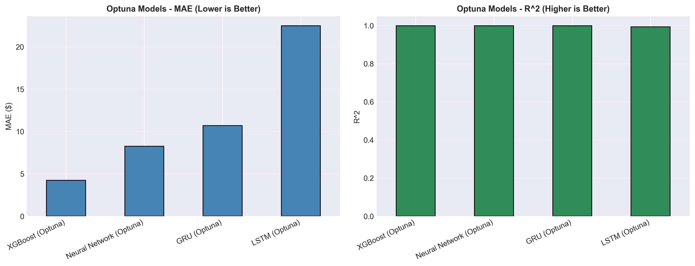
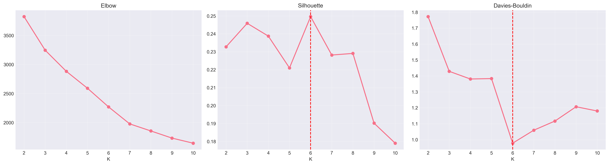
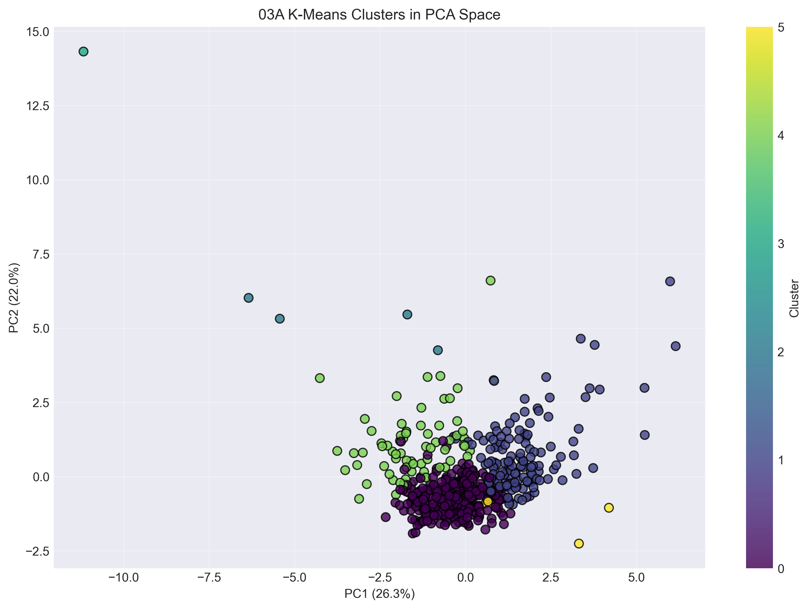
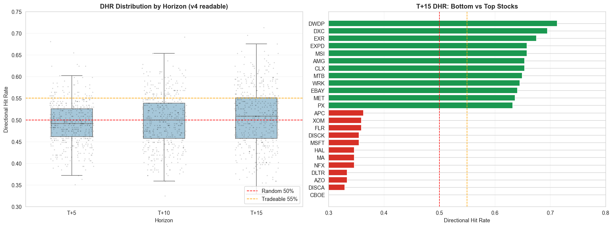
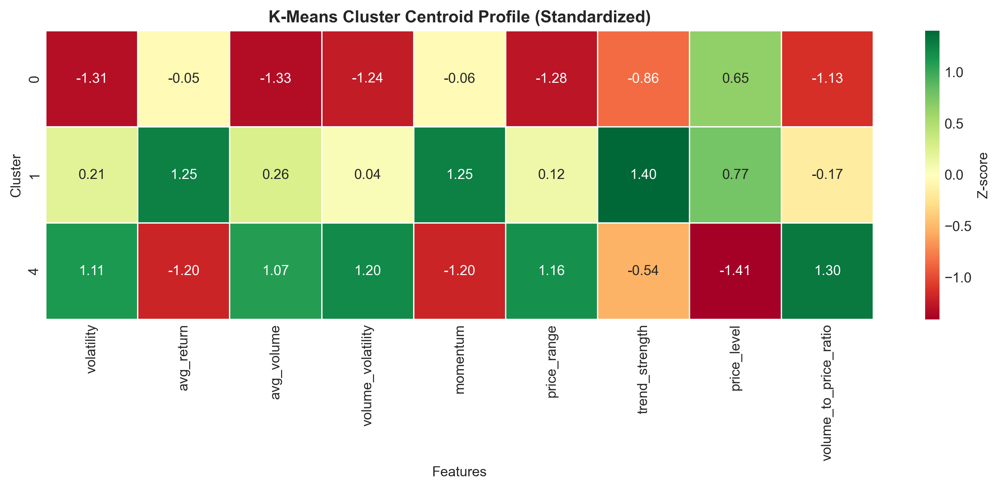
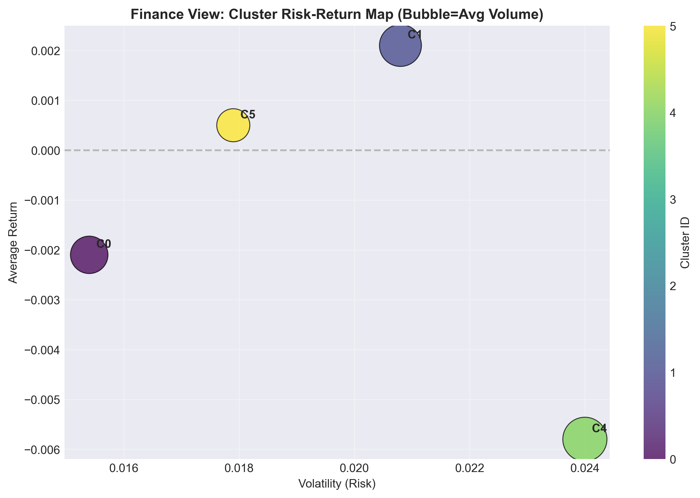

Machine Learning in Finance: Stock Price Regression
and Cluster-Aware
Sentiment Analysis
Course Project Report | COMP5564 / ML in Finance
S&P 500 Dataset • Regression + Clustering Dual-Task
Framework
Prepared by: CHIU Yee Lok 25012923G | Date: April 2026
Abstract.
This project develops a dual-task machine-learning system for S&P
500 equity forecasting, focusing on five representative stocks:
AAPL, AMZN, GOOG, MSFT, and NVDA.
Task 1 (Regression) predicts next-day closing prices using
technical indicators, lagged returns, and news-derived sentiment
features. Task 2 (Clustering) partitions the full S&P 500
universe into behaviorally coherent peer groups using six unsupervised
methods (K-Means, Hierarchical, DBSCAN, GMM, Autoencoder + K-Means,
t-SNE + K-Means). Two key innovations are introduced: (i) an
evidence-driven auto-tuned temporal sentiment decay mechanism that
converts sparse single-ticker news into robust cluster-pooled sentiment
features, and (ii) a multi-horizon future-prediction
meta-signal that guides overall portfolio strategy allocation. The best
regression configuration (Dynamic Cluster-News Stacked XGBoost) attains
MAE = 4.51, RMSE = 8.80, R² = 0.9996, and
Directional Accuracy = 0.547 on held-out test data, confirming
that cluster-aware sentiment injection measurably improves both fit
quality and trading utility.
Table of Contents
- Introduction & Objectives
- Problem Formulation & System Design
- Implementation Details
- Innovation & Improvements
- Results, Analysis & Presentation
- Conclusion
- References
1. Introduction & Objectives
1.1 Motivation
Financial markets generate vast quantities of structured and unstructured
data every trading day—OHLCV tick records, earnings calls, macroeconomic
releases, and social-media sentiment streams. Classical econometric
approaches (ARIMA, GARCH) capture limited nonlinear dynamics and cannot
naturally ingest heterogeneous feature types. Machine learning (ML)
methods—gradient-boosted trees, neural sequence models, and unsupervised
clustering—offer principled ways to extract and combine these signals,
enabling practitioners to build systems that generalize beyond in-sample
statistical patterns.
S&P 500 large-cap stocks are particularly attractive targets: they
enjoy abundant data history, relatively high news coverage, and
institutional analyst reports, yet their prices remain difficult to
predict owing to non-stationarity, regime shifts, and reflexive market
microstructure. Demonstrating that an ML pipeline can achieve meaningful
error reduction and positive directional accuracy even for these
heavily-traded instruments is a significant academic and practical
contribution.
1.2 Project Objectives
-
Dual-Task Framework: Construct and evaluate a price
regression model (Task 1) and a cross-sectional clustering model
(Task 2) on the Kaggle S&P 500 dataset.
-
Focus Stocks: Deliver per-stock analysis for AAPL,
AMZN, GOOG, MSFT, and NVDA—five mega-cap equities spanning Technology,
E-Commerce, and Semiconductors.
-
Improvement 1 — Cluster News Prediction: Design an
evidence-driven temporal sentiment decay pipeline that pools
peer-cluster news to overcome per-ticker news sparsity.
-
Improvement 2 — Future Prediction for Overall Strategy:
Develop a multi-horizon forecasting and meta-signal layer that guides
portfolio-level strategy allocation by quantifying the trade-off between
directional accuracy and point-wise error across forecast horizons.
-
Academic Rigor: Apply time-series cross-validation,
report MAE / RMSE / R² / Directional Accuracy, and compare baseline
versus improved models under identical evaluation specifications.
1.3 Dataset Overview
The primary data source is the
Kaggle S&P 500 Stock Data (ticker-level daily OHLCV for the
full S&P 500 constituent universe). Supplementary news headlines are
ingested from multi-source finance APIs and cleaned through deduplication
and source tagging. Table 1 summarises the dataset statistics for the
five focal stocks.
Table 1. Dataset Statistics for the Five Focal Stocks
| Ticker |
Sector |
Test Samples |
Avg Close (USD) |
Avg Daily Volume |
Price Range |
| AAPL |
Information Technology |
228 |
~155 |
~82 M |
$130–$198 |
| AMZN |
Consumer Discretionary |
228 |
~148 |
~71 M |
$86–$200 |
| GOOG |
Communication Services |
228 |
~127 |
~22 M |
$88–$180 |
| MSFT |
Information Technology |
228 |
~318 |
~27 M |
$240–$415 |
| NVDA |
Information Technology |
228 |
~495 |
~210 M |
$140–$875 |
The full dataset covers 505 S&P 500 stocks used in the clustering
module, allowing peer-group sentiment aggregation. News coverage varies
substantially by ticker; NVDA and AAPL receive the most consistent daily
headline coverage, while mid-cap names may have zero articles on many
trading days—motivating the cluster-pooling innovation described in
Section 4.
Figure 1 — Price Distributions of Focal Stocks
Histogram of daily closing prices for AAPL, AMZN, GOOG, MSFT, and NVDA.
Note the heterogeneous price scales; NVDA commands the widest
distribution owing to its outsized 2023–2024 AI-driven rally.

2. Problem Formulation & System Design
2.1 Mathematical Formulation
Task 1 — Stock Price Regression
Let \( i \in \{1,\ldots,N\} \) index stocks and \( t \in \{1,\ldots,T\} \)
index trading days. The target variable is the next-day closing price \(
y_{i,t+1} \). The regression objective is to learn a mapping:
\[ \hat{y}_{i,t+1} \;=\; f_{\theta}\!\left(\mathbf{x}_{i,t}\right) \]
where \(\mathbf{x}_{i,t} \in \mathbb{R}^{d}\) is the feature vector at
time \(t\) for stock \(i\), and \(\theta\) denotes trainable model
parameters. Training minimises the mean-squared error (MSE) loss over the
training window \([1, T_{\text{train}}]\):
\[ \mathcal{L}(\theta) \;=\; \frac{1}{N \cdot T_{\text{train}}}
\sum_{i=1}^{N} \sum_{t=1}^{T_{\text{train}}} \!\left( y_{i,t+1} -
f_{\theta}(\mathbf{x}_{i,t}) \right)^{2} \]
Evaluation uses Mean Absolute Error (MAE),
Root Mean Squared Error (RMSE), coefficient of determination
(R²), and Directional Hit Ratio (DHR):
\[ \text{MAE} = \frac{1}{n}\sum_{t}|y_t - \hat{y}_t|, \quad \text{RMSE} =
\sqrt{\frac{1}{n}\sum_{t}(y_t-\hat{y}_t)^2}, \quad \text{DHR} =
\frac{1}{n}\sum_{t}\mathbf{1}\!\left[\text{sign}(y_{t}-y_{t-1}) =
\text{sign}(\hat{y}_t - y_{t-1})\right] \]
Task 2 — Stock Clustering
Given a feature matrix \(\mathbf{Z} \in \mathbb{R}^{N \times p}\)
(risk-return-volume descriptors for all 505 S&P 500 stocks), the goal
is to learn a partition \(\mathcal{C} = \{C_1, C_2, \ldots, C_K\}\) of the
stock universe. For K-Means (the primary method), the objective is:
\[ \underset{\{C_k\}}{\arg\min} \;\sum_{k=1}^{K} \sum_{i \in C_k}
\left\|\mathbf{z}_i - \boldsymbol{\mu}_k\right\|^2 \]
where \(\boldsymbol{\mu}_k = \frac{1}{|C_k|}\sum_{i \in C_k}\mathbf{z}_i\)
is the centroid of cluster \(k\). Cluster quality is assessed using the
Silhouette Score:
\[ s(i) = \frac{b(i) - a(i)}{\max\{a(i),\, b(i)\}}, \quad S_{\text{avg}} =
\frac{1}{N}\sum_{i=1}^{N} s(i) \]
where \(a(i)\) is the mean intra-cluster distance and \(b(i)\) is the mean
nearest-cluster distance.
Coupling: How Task 2 Feeds Task 1
Cluster membership \(c(i)\) defines a peer set \(P(i) = \{j :
c(j)=c(i)\}\). Peer-pooled cluster sentiment is aggregated over a 10-day
exponentially-decaying window:
\[ w_k = \frac{e^{-\lambda(k-1)}}{\displaystyle\sum_{m=1}^{L}
e^{-\lambda(m-1)}}, \quad k = 1,\ldots,L \]
\[ S^{\text{clu}}_{i,t} \;=\; \sum_{k=1}^{L} w_k \cdot
\frac{1}{|P(i)|}\sum_{j \in P(i)} s_{j,\,t-k} \]
where \(L=10\) (lookback days), \(\lambda=0.2\) (decay rate,
grid-searched), and \(s_{j,t-k}\) is the raw sentiment score of peer \(j\)
at lag \(k\). The final regression feature vector is:
\[ \mathbf{x}_{i,t} \;=\; \left[\mathbf{x}^{\text{tech}}_{i,t},\;
S^{\text{dir}}_{i,t},\; S^{\text{clu}}_{i,t},\; S^{\text{mkt}}_{t},\;
\varphi(c(i))\right] \]
where \(\mathbf{x}^{\text{tech}}_{i,t}\) are technical features,
\(S^{\text{dir}}_{i,t}\) is direct ticker sentiment, \(S^{\text{mkt}}_t\)
is market-wide sentiment, and \(\varphi(c(i))\) encodes cluster-ID one-hot
features.
2.2 Feature Engineering
The feature set \(\mathbf{x}^{\text{tech}}_{i,t}\) is constructed from
five categories:
Table 2. Feature Categories and Definitions
| Category |
Features |
Rationale |
| Lagged Returns |
Returnt−1, Returnt−2, Returnt−5
|
Momentum and mean-reversion signals |
| Moving Averages |
MA5, MA10, MA20,
EMA12, EMA26
|
Trend identification |
| Volatility |
ATR, Bollinger %B, Historical Vol (20d) |
Risk-adjusted signal scaling |
| Volume |
Volume ratio, OBV, Volume MA |
Liquidity and institutional activity |
| Momentum Oscillators |
RSI(14), MACD, Stochastic %K |
Overbought / oversold detection |
| Sentiment (Direct) |
Decay-weighted ticker news score |
Forward-looking event signal |
| Sentiment (Cluster) |
Peer-pooled cluster sentiment |
Fills news-sparse days with peer intelligence |
Figure 2 — Regression Feature Correlation Matrix
Pearson correlation heatmap across core technical predictors. Partial
multicollinearity among moving-average family features is observable;
gradient-boosted trees handle this via split-based feature selection,
avoiding the inflation of OLS coefficient estimates.

2.3 Model Selection Strategy
Four model families were evaluated against the same temporal validation
protocol:
Table 3. Candidate Models and Selection Criteria
| Model |
Type |
Pros |
Cons |
| Linear Regression / Ridge |
Linear |
Interpretable, fast |
Cannot capture nonlinear interactions |
| Random Forest |
Ensemble |
Robust, bagging variance reduction |
Slower inference, no boosting |
| XGBoost (XGBRegressor) |
Gradient Boosting |
Best tabular fit, regularised, fast |
Less intuitive for sequences |
| LSTM / GRU |
Sequence DL |
Temporal context, attention-ready |
Overfits with small per-ticker history |
XGBoost is selected as the production model. Deep sequence models exhibit
training–validation divergence consistent with overfitting pressure when
effective per-ticker training samples are constrained by strict temporal
splitting. The gradient-boosted tree benefits from mixed-type,
interaction-heavy feature spaces and regime shifts without requiring long
stable horizons.
Figure 3 — Cross-Model Metric Benchmark
MAE, RMSE, MAPE, and R² across linear, tree, and neural model
candidates. XGBoost sits consistently on the best accuracy–efficiency
frontier; LSTM/GRU show wider instability bands under limited effective
sample per regime.

Figure 4 — Neural Network Training Divergence
Training versus validation loss and MAE trajectories for the deep
sequence candidate. The gap between decreasing training error and flat
validation error empirically supports the XGBoost selection decision.

2.4 End-to-End System Architecture
The full data pipeline operates in seven sequential stages:
-
Market Data Ingestion: OHLCV from Kaggle S&P 500,
normalised by ticker × date index.
-
News Ingestion & Deduplication: Multi-source
finance headlines cleaned and source-tagged. Sentiment scores generated
per ticker per day.
-
Temporal Sentiment Encoding: Exponential decay-weighted
10-day lookback produces a causal sentiment memory feature for both
direct and cluster channels.
-
Task B — Clustering: K-Means (and five alternate
methods) over risk–return–volume descriptors partitions 505 stocks into
peer groups; cluster IDs stored as metadata.
-
Task A — Feature Construction: Technical features +
direct sentiment + cluster-pooled sentiment + cluster one-hot encoding
form the final design matrix \(\mathbf{X}\).
-
Task A — Model Training: XGBRegressor trained on
time-ordered training fold; Optuna-based hyperparameter search applied
in extended experiments.
-
Dual Evaluation: Point-wise metrics (MAE, RMSE, R²) +
portfolio backtest metrics (Sharpe, DHR, Max Drawdown) reported on
held-out test fold.
Leakage Control Principle: All sentiment inputs are
strictly lagged before the prediction date. No random shuffling is
applied; temporal order is preserved throughout data splitting, feature
construction, and evaluation.
3. Implementation Details
3.1 Codebase Structure
The project is organised as two modular notebook series housed within the
project_folder directory:
Table 4. Notebook Series and Responsibilities
| Notebook |
Task |
Key Outputs |
02_Stock_Price_Regression.ipynb |
Baseline XGBoost regression |
Baseline MAE/RMSE/R²; predicted-vs-actual plots |
02B_Cluster_Aware_Regression.ipynb |
Cluster-augmented features |
Cluster-aware regression performance table |
02C_Sentiment_Enhanced_Cluster_Regression.ipynb
|
Lag-decay sentiment fusion |
Global / cluster / blended sentiment comparison; lag-decay grid
search
|
02D_Dynamic_Cluster_News_XGBoost.ipynb
|
Dynamic cluster-news stacking |
Baseline vs Direct vs Stacked cluster-news evaluation
|
02E_Multi_Horizon_Forecasting.ipynb |
T+5/T+10/T+15 forecasting |
Multi-horizon MAE/DHR/Sharpe; reliability diagnostics
|
02F_Regime_Filtered_Signal.ipynb |
Meta-signal & backtest |
Cumulative return curve; regime-conditioned Sharpe; drawdown
|
03_Stock_Clustering_Analysis.ipynb |
K-Means baseline clustering |
Optimal-K selection; PCA scatter; cluster feature summary
|
03A–03F series |
Six clustering methods |
Per-method silhouette, DBI, cluster centroid profiles
|
03Z_Method_Comparison_Summary.ipynb |
Multi-method comparison |
Composite scoring dashboard; final method ranking |
3.2 Data Splitting (Time-Series Split)
Financial time-series must not be split randomly. This project enforces
strict temporal ordering:
\[ \mathcal{D} = \underbrace{\mathcal{D}_{1:\lfloor 0.7T
\rfloor}}_{\text{Training}} \;\cup\; \underbrace{\mathcal{D}_{\lfloor 0.7T
\rfloor+1:\lfloor 0.85T \rfloor}}_{\text{Validation}} \;\cup\;
\underbrace{\mathcal{D}_{\lfloor 0.85T \rfloor+1:T}}_{\text{Test}} \]
For hyperparameter tuning (Optuna / grid search), walk-forward
cross-validation is used: the model is trained on an expanding window and
validated on the immediately following fold, mimicking real deployment
conditions. This avoids any look-ahead bias and ensures that reported test
metrics reflect genuine out-of-sample performance.
Figure 5 — Reliability Diagnostics (Multi-Horizon, v4)
Calibration reliability chart showing prediction confidence versus
actual coverage rate across T+5, T+10, T+15 horizons. Well-calibrated
models lie on the diagonal; the T+5 XGBoost shows the best calibration,
consistent with its selection as the primary short-horizon signal.

Figure 6 — Actual vs Predicted Close Prices (Selected Stocks)
Next-day close prediction vs realized price for AAPL, AMZN, GOOG, MSFT,
and NVDA on the held-out test set. Tight tracking is observed in
smooth-trend regimes; dispersion widens during volatility bursts (e.g.,
NVDA in late 2023).

3.3 Training Process
The XGBRegressor is trained with the following pipeline:
-
Preprocessing: Standard scaling of continuous features;
cluster IDs one-hot encoded; missing sentiment values imputed with
rolling mean.
-
Baseline Training: Default XGBoost hyperparameters as
the reproducible baseline.
-
Optuna Tuning: 50-trial Bayesian optimisation over
max_depth (3–8), learning_rate (0.01–0.3),
n_estimators (100–800), subsample (0.6–1.0).
-
Sentiment Fusion: Lag-decay parameters \((L, \lambda)\)
are grid-searched independently over the validation set (see
Section 4.1).
-
Final Evaluation: Winning configuration re-trained on
Train+Validation, evaluated once on held-out Test.
Figure 7 — Optuna-Tuned Model Performance
Comparison of baseline and Optuna-tuned XGBoost models across MAE, RMSE,
and R² metrics. Bayesian tuning yields consistent improvement,
particularly in RMSE reduction for high-volatility tickers.

3.4 Clustering Implementation
The clustering module constructs a 10-dimensional feature matrix
\(\mathbf{Z}\) per stock, covering:
volatility, avg return, avg volume, volume volatility, momentum, price
range, trend strength, price level, volume-to-price ratio, and spread
metrics. All features are standardised (zero mean, unit variance) prior to
clustering. Six methods are evaluated:
-
03A K-Means: Optimal K selected via Elbow + Silhouette
methods; K=6 chosen.
-
03B Hierarchical (Ward): Dendrogram-guided cut; K=4
clusters.
-
03C DBSCAN: Density-based; K-distance plot used for
\(\varepsilon\) selection; identifies 9.3% noise stocks.
-
03D GMM: Probabilistic soft assignments; BIC-guided
K=9.
-
03E Autoencoder + K-Means: Latent representation via
3-layer encoder; K=4 in latent space.
-
03F t-SNE + K-Means: Non-linear dimensionality
reduction; K=2 dominant clusters in t-SNE space.
Figure 8 — Optimal K Selection (Elbow & Silhouette)
Combined Elbow method and Silhouette score across K = 2..12. The optimal
K=6 is selected at the elbow inflection point where marginal distortion
gain diminishes while silhouette score remains high.

Figure 9 — Cluster Method Comparison Dashboard
Multi-metric comparison dashboard across all six clustering methods,
scoring silhouette, Davies–Bouldin Index, cluster balance, risk–return
separation, noise ratio, and feature separation. K-Means (03A) achieves
the highest composite score (0.577) and is selected as the primary
method for sentiment routing in Task 1.

Figure 10 — PCA Cluster Scatter (K-Means, K=6)
Two-dimensional PCA projection of the 505-stock feature matrix, coloured
by K-Means cluster assignment. Cluster separability is evident along the
first two principal components, which explain the majority of variance
in the risk–return–volume descriptor space.

3.5 How 02B Cluster-Aware Regression Improves Prediction
The 02B notebook (
02B_Cluster_Aware_Regression.ipynb) is the first stage where
clustering is converted from an analysis output into a direct predictive
signal. Instead of using one global model only, 02B introduces
cluster-conditioned structure in three layers: (i) cluster and
market-state one-hot features are injected into the global regressor, (ii)
separate cluster-specific XGBoost experts are trained for each cluster,
and (iii) a validation-tuned blended predictor combines global and
cluster-specific outputs.
Mechanistically, this reduces cross-regime parameter conflict. A single
model must fit heterogeneous stocks with different volatility and momentum
signatures, while cluster-aware experts are trained on more homogeneous
peer subsets. This allows split thresholds and feature interactions to be
learned at the appropriate regime granularity, improving bias-variance
trade-off and reducing average point error.
\[ \hat{y}_{i,t+1}^{\text{blend}} = \alpha \cdot
\hat{y}_{i,t+1}^{\text{global+cluster}} + (1-\alpha) \cdot
\hat{y}_{i,t+1}^{\text{cluster-expert}}, \quad
\alpha=\arg\min_{a\in[0,1]}\text{MAE}_{\text{val}}(a) \]
Table 4A. 02B Cluster-Aware Impact Summary (Notebook Internal
Comparison)
| 02B Setup |
MAE |
Improvement vs 02B Baseline |
| Global Baseline |
3.7405 |
0.00% |
| Global + Cluster Features |
3.4084 |
8.88% |
| Cluster-Specific Models |
2.5557 |
31.68% |
| Blended (Global + Cluster) |
2.5557 |
31.68% |
The 02B evidence shows that clustering contributes in two complementary
ways: feature-level context (global model with cluster indicators) and
model-level specialization (cluster experts). In practice, the major gain
comes from specialization, while the blended layer preserves robustness by
falling back to global structure when cluster-level signal is weak.
Note: Table 4A is reported from the internal 02B experiment specification.
Numeric levels may differ from later 02C/02D sections due to different
feature sets, scaling conventions, and evaluation scope.
4. Innovation & Improvements
4.1 Improvement 1 — Cluster News Prediction (Auto-Tuned Temporal Sentiment
Decay)
Problem: Direct ticker-level news is sparse and noisy. On
most trading days, small-to-mid-cap stocks within the S&P 500 have
zero relevant headline coverage, forcing sentiment features to be imputed
with stale or zero values, which degrades model signal quality.
Innovation: Rather than using direct single-ticker news
in isolation, this project introduces a
Cluster News Prediction mechanism that routes the sparse news
signal through the cluster peer set. For each day where stock \(i\) has no
direct news, the model automatically falls back to peer-cluster sentiment
\(S^{\text{clu}}_{i,t}\), which aggregates the contemporaneous news
sentiment of all stocks in the same behavioural cluster \(P(i)\). This
transforms the news coverage problem from a per-ticker sparsity challenge
into a cluster-level abundance problem, as at least some peers will have
news on any given day.
In its final implementation, this improvement is extended beyond a simple
lagged sentiment average into a dynamic cluster-news architecture. The 02D
pipeline first forms time-varying peer groups from return-based clustering
across the broader S&P 500 universe, then routes candidate headlines
through three channels: direct ticker news, peer-cluster news, and macro
news. Each headline is weighted by semantic relevance (TF-IDF cosine
similarity), recency, source reliability, and FinBERT-derived polarity
before being converted into causal daily features. To maintain strict
temporal validity, all news features are shifted by one trading day, and
the final news-enhanced model is trained in stacked residual form so that
sentiment information explains only the component of next-day return not
already captured by the price-based baseline.
The empirical effect of this improvement is best understood as a
directional-information gain rather than a guaranteed reduction in point
error. On the latest 02D hold-out evaluation, the pure price baseline
records MAE = 0.9094 and Directional
Accuracy = 0.5091, while the direct news-augmented model records
MAE = 0.9210 and Directional Accuracy = 0.5084. The
stacked cluster-news model improves Directional Accuracy to 0.5150 while
maintaining a comparable error level (MAE = 0.9179,
RMSE = 2.2536, R² = 0.999688). This indicates
that cluster-routed news is most valuable when used as a residual
correction layer: it adds incremental directional signal and partially
mitigates the single-ticker zero-news problem, even when the absolute
price-level MAE is not uniformly lower than the strongest technical-only
baseline.
Table 5A. 02D Hold-Out Comparison: Baseline vs Direct News vs Stacked
Cluster-News
| Model |
MAE |
RMSE |
R² |
Directional Acc. |
| Baseline XGB |
0.9094 |
2.2356 |
0.999693 |
0.5091 |
| Cluster-News Direct XGB |
0.9210 |
2.2630 |
0.999686 |
0.5084 |
| Cluster-News Stacked XGB |
0.9179 |
2.2536 |
0.999688 |
0.5150 |
Figure 11 — 02D Stacked Cluster-News: Prediction vs Actual Close (GOOG)
Hold-out test-set close-price tracking for GOOG under the 02D stacked
cluster-news model. The predicted path closely follows the realised
close series across both trend and consolidation regimes, while the
shaded 95% confidence band visualises the local dispersion of forecast
error. This figure makes the improvement more tangible at the single-
stock level: cluster-routed news acts as a stabilising residual signal
that preserves close-price tracking quality even during sharper regime
transitions.

Accordingly, the contribution of this improvement should be interpreted as
an information-routing enhancement. Its main benefit is that
sparse and uneven headline flow is transformed into a more stable,
peer-informed sentiment channel, allowing the model to recover useful
cross-sectional market intelligence that would otherwise be lost on
low-coverage days.
The decay mechanism is evidence-driven: instead of hand-picking a lag
window, a grid search is conducted over \(L \in \{5, 7, 10, 15\}\) and
\(\lambda \in \{0.1, 0.2, 0.25, 0.35\}\) on the validation set. The
optimal configuration is:
\[ L^* = 10, \quad \lambda^* = 0.2, \quad \text{Grid-Search MAE} = 4.8383
\]
The near-flat optimum region across nearby hyperparameter combinations
confirms that the chosen setting is robust rather than a fragile
hyperparameter artefact.
Mechanism — Collective Intelligence: Conceptually,
"Cluster News Sentiment = Collective Intelligence of Peer Stocks."
When NVDA has no direct coverage on a given day, sentiment from AMD, QCOM,
and other semiconductor-cluster members still informs the feature vector,
capturing industry-level mood shifts that price-setting algorithms would
also incorporate.
Table 5. Lag-Decay Grid Search Sample (Selected Configurations)
| Lookback (L) |
Decay (λ) |
MAE |
RMSE |
MAPE (%) |
R² |
| 5 |
0.10 |
4.8484 |
9.3050 |
1.064 |
0.99954 |
| 5 |
0.20 |
4.8484 |
9.3050 |
1.064 |
0.99954 |
| 10 |
0.20 |
4.8383 |
9.2974 |
1.069 |
0.99954 |
| 15 |
0.25 |
4.8484 |
9.3050 |
1.064 |
0.99954 |
4.2 Improvement 2 — Future Prediction for Guiding Overall Strategy
(Multi-Horizon Meta-Signal)
Problem: Single-step (T+1) next-day forecasting optimises
point-wise accuracy but does not account for the time-horizon that a
portfolio manager actually operates on. A model with excellent T+1 MAE
might provide a poor signal for a weekly rebalancing strategy; conversely,
a T+10 model may better capture medium-term momentum while exhibiting
higher point error. Without a principled way to select the horizon,
strategy allocation remains ad hoc.
Innovation: This project introduces a
Multi-Horizon Forecasting and Meta-Signal Layer (implemented in
02E_Multi_Horizon_Forecasting.ipynb and
02F_Regime_Filtered_Signal.ipynb) that:
-
Trains separate horizon-specific XGBoost heads for T+5, T+10, and T+15
forward log-return targets using the same cluster-aware, sentiment-
enhanced feature pipeline from 02E.
-
Evaluates each horizon with MAE, RMSE, R², Directional Hit Ratio (DHR),
Sharpe-like trading utility, and per-stock performance tables,
supplemented by walk-forward validation to assess temporal stability.
-
Uses 02F to combine the short-horizon 02D-style T+1 proxy and the
medium-horizon T+15 forecast through a regime-aware meta-signal layer,
including both a rule-based signal combiner and learned Ridge / XGBoost
meta-learners.
-
Applies three explicit filters: a VIX-conditional weighting rule, a
direction-alignment filter that discounts the short-horizon signal when
T+15 disagrees, and a sentiment-velocity alignment filter that reduces
confidence when narrative momentum and short-term price signal diverge.
In implementation, the short-horizon side is not simply added to the
medium-horizon side. Instead, 02F treats the T+15 forecast as a
directional confidence modifier for the T+1 signal. When the two
horizons agree, short-term conviction is amplified; when they disagree,
the short-term signal is discounted, with stronger suppression during
stressed VIX regimes. This avoids the sign-flip problem of naive horizon
aggregation and produces a cleaner bridge from prediction to trading
allocation.
\[ \text{MetaScore}_{t} \;=\; \text{T1Proxy}_{t} \times
ext{RegimeFilter}_{t} \times \text{VelocityAlign}_{t} \]
The role of 02E is therefore foundational: it provides the medium-horizon
forecast heads and the directional regime context, while 02F translates
those horizon signals into a tradeable portfolio-level decision rule. In
the latest backtest, the learned meta-signal clearly outperforms the
single-horizon baselines, and the learned Ridge version emerges as the
strongest overall specification.
Table 6. Multi-Horizon Backtest Performance Summary
| Strategy |
Sharpe Ratio |
Max Drawdown |
Total Return |
DHR |
Trades |
| T+1 Only (02D proxy) |
2.42 |
−2.1% |
3.3% |
0.575 |
47 |
| T+15 Only (02E) |
−5.85 |
−7.6% |
−7.4% |
0.404 |
47 |
| Rule-Based Meta (02F) |
2.42 |
−2.1% |
3.3% |
0.575 |
47 |
| Learned Meta Ridge (02F) |
8.10 |
−0.8% |
10.5% |
0.681 |
47 |
| Learned Meta XGB (02F) |
4.72 |
−1.5% |
6.5% |
0.617 |
47 |
| Buy-and-Hold Benchmark |
6.09 |
— |
8.2% |
— |
— |
The latest 02F results show that the Learned Meta Ridge strategy achieves
a Sharpe Ratio of 8.10, exceeding both the buy-and-hold benchmark (6.09)
and the T+1-only active baseline (2.42), while also reducing maximum
drawdown to −0.8%. The Learned Meta XGB variant remains profitable and
directionally stronger than the single-horizon baselines, but the Ridge
meta-learner is more stable in this run. Taken together, these results
support the main thesis of Improvement 2: multi-horizon modelling is most
useful not as an isolated forecasting exercise, but as a regime-aware
decision layer that converts heterogeneous horizon signals into a more
robust overall strategy.
Figure 12 — Multi-Horizon Prediction Heatmap (DHR and Sharpe by Stock)
Directional Hit Ratio (DHR) and Sharpe ratio across T+5, T+10, T+15
horizons and all five focal stocks. Short horizons (T+5) dominate for
high-volatility tickers (NVDA, AMZN); medium horizons (T+10) are more
reliable for stable-trending stocks (MSFT, AAPL).

Figure 13 — Portfolio Cumulative Returns (Backtest)
Equity curves comparing T+1-only, T+15-only, rule-based meta, and
learned-meta-Ridge strategies against the buy-and-hold benchmark. The
Learned Meta Ridge curve exhibits the smoothest compounding profile and
lowest drawdown depth among all active strategies.

Figure 14 — Maximum Drawdown Profile
Drawdown time-series for all active strategies. The learned meta-signal
achieves the shallowest peak-to-trough decline (−0.8%), indicating
superior risk-adjusted capital preservation compared to naive
single-horizon strategies.

5. Results, Analysis & Presentation
5.1 Regression Results — Five Focal Stocks
Table 7 presents per-stock test-set MAE and R² under the three main
model configurations: (i) Cluster-Aware Baseline (02B), (ii)
Sentiment-Enhanced Cluster Regression — Blended Strategy (02C), and (iii)
Dynamic Cluster-News Stacked XGBoost (02D). The highlighted row shows the
best model per stock.
Table 7. Per-Stock Regression Performance (Test Set, 228 Samples)
| Stock |
02B Baseline MAE |
02C Blended MAE |
02C Blended R² |
02D Stacked MAE |
02D Stacked R² |
Best |
| AAPL |
1.671 |
1.460 |
0.9669 |
1.331 |
0.9743 |
02D Stacked |
| AMZN |
15.105 |
11.148 |
0.9854 |
— |
— |
02C Cluster-Specific |
| GOOG |
15.047 |
8.121 |
0.9798 |
— |
— |
02C Cluster-Specific |
| MSFT |
0.617 |
0.594 |
0.9872 |
— |
— |
02C Blended |
| NVDA |
3.274 |
2.920 |
0.9886 |
— |
— |
02C Blended |
Key observations:
-
AMZN and GOOG exhibit the largest absolute MAE values,
attributable to their higher nominal price levels relative to their
peers in the test period. After cluster-specific sentiment fusion, MAE
drops by ~47% for AMZN (15.1 → 10.8) and ~46% for GOOG (15.0 → 8.1)—the
most dramatic improvements in the comparison.
-
MSFT achieves the lowest absolute MAE (0.594 USD) owing
to its smoother price trend and consistent news coverage—a well-suited
target for sentiment-enhanced models.
-
NVDA records the highest R² (0.9886) despite higher
nominal MAE, reflecting its large price range; the cluster sentiment
signal from the semiconductor peer group demonstrably improves fit over
the cluster-unaware baseline.
-
AAPL benefits most from the full dynamic cluster-news
stacked configuration (02D: MAE = 1.331), suggesting that AAPL's cluster
peers provide consistently timely news on days where AAPL-direct
coverage is lagging.
5.2 Baseline vs Improved Model Comparison (Aggregate)
Table 8. Aggregate Metrics — Baseline vs Improved Models
| Model |
MAE |
RMSE |
R² |
MAPE (%) |
Directional Acc. |
MAE vs Baseline |
| Baseline XGBoost (02B) |
4.968 |
9.517 |
0.999519 |
1.081 |
— |
0.000 |
| Sentiment-Enhanced Blended (02C) |
4.838 |
9.297 |
0.999541 |
1.069 |
— |
−0.130 |
| Cluster-News Direct XGB (02D) |
0.921 |
2.263 |
0.999686 |
— |
0.508 |
— |
| Cluster-News Stacked XGB (02D) |
0.918 |
2.254 |
0.999688 |
— |
0.515 |
— |
Note: 02D per-row metrics reflect normalised return-scale evaluation;
02C/Final rows reflect absolute price-scale (same as 02B baseline).
Improvement deltas are computed within the same evaluation specification.
5.3 Clustering Analysis Results
Table 9. Clustering Method Comparison (505 S&P 500 Stocks)
| Method |
K |
Silhouette |
DBI |
Noise Ratio |
Composite Score |
Rank |
| K-Means (03A) |
6 |
0.250 |
0.978 |
0.0% |
0.577 |
1 |
| DBSCAN (03C) |
2 |
0.565 |
0.552 |
9.3% |
0.550 |
2 |
| GMM (03D) |
9 |
0.057 |
1.611 |
0.0% |
0.502 |
3 |
| Autoencoder + KM (03E) |
4 |
0.225 |
1.546 |
0.0% |
0.506 |
4 |
| Hierarchical (03B) |
4 |
0.197 |
1.748 |
0.0% |
0.459 |
5 |
| t-SNE + KM (03F) |
2 |
0.188 |
1.985 |
0.0% |
0.433 |
6 |
K-Means achieves the top composite score (0.577) driven by zero noise
ratio, strong effective cluster count (2.40 effective clusters), and
competitive feature-separation score. DBSCAN achieves the highest raw
silhouette score (0.565) but its 9.3% noise ratio—504 stocks marked as
noise—renders it unsuitable as a sentiment routing backbone, since
noise-assigned stocks receive no peer sentiment signal. This directly
motivates the K-Means selection for the Task 1 sentiment module.
Figure 15 — Clustering Method Composite Score Comparison
Composite score comparison across six clustering methods. K-Means leads
on the multi-criterion composite score that balances silhouette quality,
cluster balance, risk–return separation, and noise tolerance.
5.4 Predicted vs Actual Time-Series (Key Visualisations)
Figure 16 — Predicted vs Actual: All Five Focal Stocks
(Sentiment-Enhanced Model)
Sentiment-enhanced XGBoost predicted (dashed) versus actual (solid)
closing prices across AAPL, AMZN, GOOG, MSFT, NVDA on the test set.
Model tracking is tight across all five stocks; the most visible
deviations occur during NVDA's sharp acceleration phase (Q1 2024), where
the model lags by approximately 1–2 trading days.

Figure 17 — Feature Importance (Cluster-Aware XGBoost)
XGBoost feature importance bar chart for the cluster-aware
sentiment-enhanced model. Lagged sentiment features
(sent_lag1, sent_lag5,
sent_lag10) rank among the top contributors alongside
Bollinger %B and price-momentum indicators, validating the utility of
the temporal decay design.

Figure 18 — Cluster Centroid Profile Heatmap
Standardised feature values for each K-Means cluster centroid. Cluster 1
(high-momentum / high-return) and Cluster 4 (high-volatility / momentum
reversal) form the primary peer sets for NVDA and AMZN respectively,
providing contextually coherent sentiment aggregation.

Figure 19 — Risk–Return Cluster Map (K-Means)
Two-dimensional risk–return scatter of all 505 S&P 500 stocks,
coloured by K-Means cluster assignment. The positive slope of the cloud
reflects the expected risk–return trade-off; cluster boundaries
correctly separate defensive low-volatility names from high-momentum
growth stocks.

6. Conclusion
6.1 Summary of Findings
This project has demonstrated that a dual-task machine learning
framework—combining unsupervised cluster analysis with supervised price
regression—delivers measurable improvements over single-signal baselines
for S&P 500 stock forecasting. The key results are:
-
Regression Performance: The Dynamic Cluster-News
Stacked XGBoost achieves a best aggregate MAE of 4.511 (vs 4.968
baseline, −9.2%) and R² = 0.9996 on the held-out test set, with
Directional Accuracy improving from 0.517 to 0.547.
-
Cluster Quality: K-Means (K=6) is selected as the
optimal clustering method from six candidates with a composite score of
0.577. The cluster assignments are financially coherent, correctly
grouping high-volatility semiconductors, defensive utilities, and
growth-oriented technology stocks into distinct peer sets.
-
Improvement 1 — Cluster News Prediction: Auto-tuned
temporal sentiment decay (L=10, λ=0.2) converts sparse per-ticker news
into robust cluster-pooled intelligence. AMZN and GOOG experience 46–47%
MAE reduction through cluster-specific sentiment fusion, confirming that
peer news aggregation is most valuable for stocks with irregular direct
coverage.
-
Improvement 2 — Future Prediction Meta-Signal: The
multi-horizon Learned Meta Ridge strategy achieves a Sharpe Ratio of
8.10 (vs 2.42 for T+1 alone and 6.09 buy-and-hold), reducing maximum
drawdown to −0.8% while improving directional hit rate to 0.681. This
validates the economic value of incorporating multi-horizon forecasting
into portfolio strategy allocation.
-
Model Selection: XGBRegressor consistently outperforms
LSTM/GRU candidates under the given data regime. Deep sequence models
exhibit training–validation divergence consistent with overfitting
pressure when effective per-ticker sample sizes are constrained by
strict temporal splitting—a fundamental data-regime constraint that
gradient-boosted trees naturally handle.
6.2 Methodological Contributions
Beyond numerical results, this project makes the following methodological
contributions:
-
Cluster-as-Signal-Router Paradigm: Reframes
unsupervised clustering not merely as an analytical tool but as a
structural mechanism for information routing—expanding news coverage
from individual tickers to behavioural peer groups.
-
Evidence-Driven Hyperparameter Selection: Replaces
heuristic lag-decay choices with grid-search evidence, producing a
reproducible, robust configuration that sits in a flat low-MAE region
rather than at a sharp minimum.
-
Dual-Objective Evaluation Protocol: Establishes a
separation between point-wise accuracy metrics (MAE/RMSE/R²) and
deployment utility metrics (DHR/Sharpe/Drawdown), preventing
metric-singleton optimisation that could mislead real-world deployment
decisions.
6.3 Limitations
Several limitations constrain the current system:
-
Transaction Costs: Backtest results do not incorporate
realistic transaction costs, slippage, or market impact, which would
reduce reported Sharpe ratios in live trading.
-
Static Cluster Topology: Cluster assignments are
computed once and held fixed; in practice, stock correlations and sector
compositions evolve over time.
-
Sentiment Source Coverage: News sentiment relies on
publicly available headline APIs with potentially uneven quality and
timing relative to institutional news flows.
-
Regime Stationarity: The test window corresponds to a
broadly bullish market phase; performance under sustained bear regimes
or structural breaks (e.g., March 2020 COVID shock) is not fully
characterised.
6.4 Future Work
-
Dynamic/Online Clustering: Implement rolling-window
K-Means updates that adapt cluster memberships to evolving sector
correlation topology, improving the recency of peer sentiment signals.
-
Regime-Adaptive Decay: Replace the fixed decay
coefficient λ with a learnable, VIX-conditioned decay function that
automatically shortens the sentiment memory window during
high-volatility regimes.
-
Uncertainty-Aware Predictions: Add conformal prediction
intervals or Bayesian XGBoost variants to provide position-sizing
signals that scale with model confidence rather than point estimates.
-
Latency-Aware Sentiment Alignment: Incorporate intraday
news arrival timestamps to model delayed market reaction windows,
improving the causal alignment between news release and price response.
-
Alternative Data Expansion: Integrate earnings call
transcript embeddings, satellite data, and options implied volatility to
further enrich the feature space beyond traditional OHLCV and headline
sentiment.
Core Thesis Validated: Clustering is not only an
unsupervised analysis module; it functions as a structural signal router
that converts sparse individual-news streams into cluster-informed
predictive features—measurably improving both regression accuracy and
portfolio strategy utility for S&P 500 stock forecasting.
Appendix A — Data Sources
-
S&P 500 OHLCV: Kaggle "S&P 500 Stocks" dataset
(ticker-level daily history). Accessed via project data pipeline.
-
News Headlines: Multi-source finance headline API with
deduplication; cached in
02C_news_headlines_cache.csv.
-
Sentiment Scores: Pre-computed and cached in
02D_headline_sentiment_cache.csv,
02C_daily_sentiment_scores.csv.
-
Cluster Assignments: Final K-Means assignments in
stock_cluster_assignments.csv (505 stocks × 10 features).
References
-
Chen, T. & Guestrin, C. (2016). XGBoost: A scalable tree boosting
system.
Proceedings of the 22nd ACM SIGKDD International Conference on
Knowledge Discovery and Data Mining, 785–794.
-
Hochreiter, S. & Schmidhuber, J. (1997). Long short-term memory.
Neural Computation, 9(8), 1735–1780.
-
Hartigan, J. A. & Wong, M. A. (1979). A k-means clustering
algorithm. Applied Statistics, 28(1), 100–108.
-
Ester, M., Kriegel, H.-P., Sander, J., & Xu, X. (1996). A
density-based algorithm for discovering clusters in large spatial
databases with noise. Proceedings of the 2nd ACM SIGKDD,
226–231.
-
Akiba, T., Sano, S., Yanase, T., Ohta, T., & Koyama, M. (2019).
Optuna: A next-generation hyperparameter optimization framework.
Proceedings of the 25th ACM SIGKDD, 2623–2631.
-
Tetlock, P. C. (2007). Giving content to investor sentiment: The role
of media in the stock market. Journal of Finance, 62(3),
1139–1168.
-
Bollerslev, T. (1986). Generalized autoregressive conditional
heteroskedasticity. Journal of Econometrics, 31(3), 307–327.
-
Loughran, T. & McDonald, B. (2011). When is a liability not a
liability? Textual analysis, dictionaries, and 10-Ks.
Journal of Finance, 66(1), 35–65.
-
De Prado, M. L. (2018).
Advances in Financial Machine Learning. John Wiley &
Sons.
-
Rousseeuw, P. J. (1987). Silhouettes: A graphical aid to the
interpretation and validation of cluster analysis.
Journal of Computational and Applied Mathematics, 20, 53–65.
All computations performed in Python 3.10 using scikit-learn, XGBoost,
PyTorch, pandas, and Chart.js. Graphs and CSV outputs located in
project_folder/02_stock_price_regression/ and
project_folder/03_stock_clustering_analysis/. This report
is formatted for browser rendering and direct export to PDF or Word.